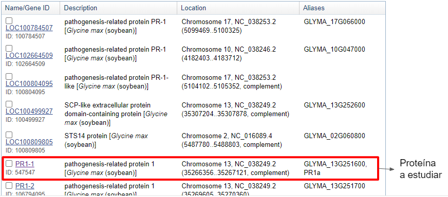
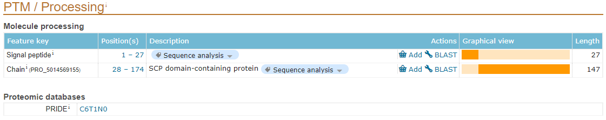
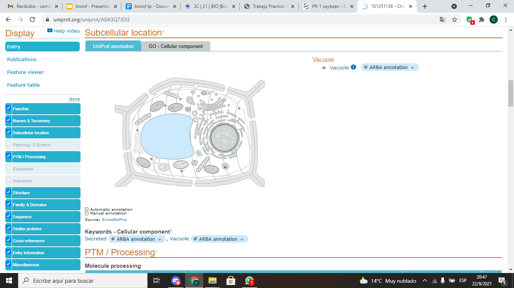
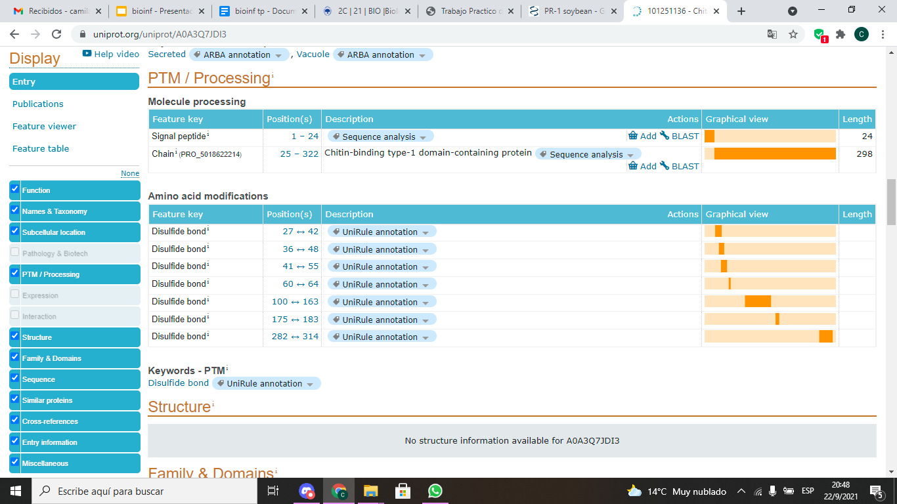
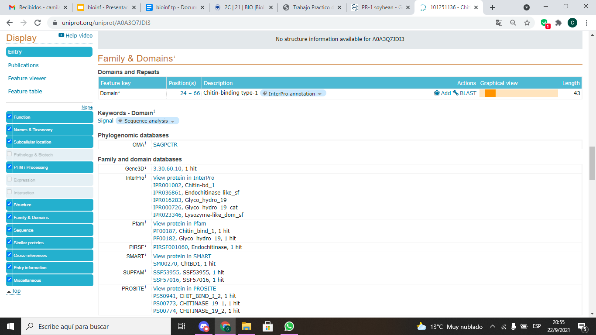
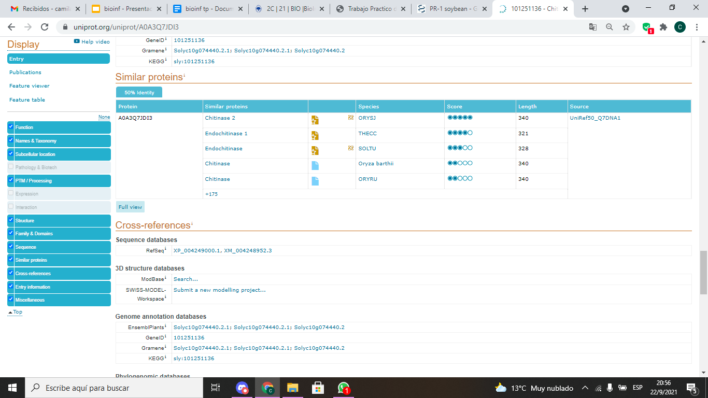
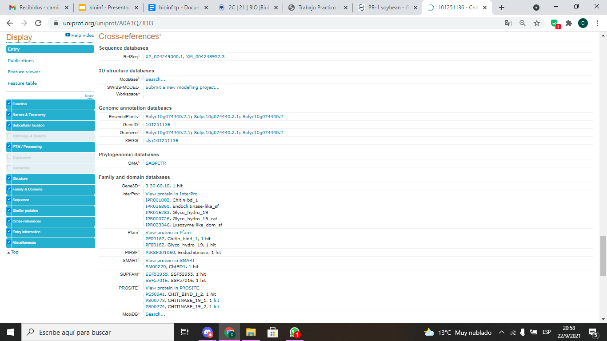

Initial practical work
PAL1
Copiar la secuencia en BLAST para identificarla y caracterizarla (NCBI-BLAST).
Elegir la secuencia “Subject” que tenga mayor porcentaje de identidad (Per. Ident) y mayor similitud a lo largo de toda la secuencia (Query Cover).
¿Qué significa el alineamiento? ¿Cómo se ve si clickeas en proteínas con menor porcentaje de identidad?
- El alineamiento es una forma de comparar secuencias de manera que se pueda llegar a tener una conclusión objetiva sobre la similitud de dichas secuencias. La similitud puede indicar la significancia funcional, estructural y evolutiva de la secuencia. La secuencia conocida es la secuencia de referencia y la desconocida es la secuencia query. Cuando clickeamos en proteínas con menor porcentaje, lo que vemos es que a menor porcentaje de coincidencia, se ven mayor cantidad de gaps o mismaching, lo que hace que baje el porcentaje de similitud.
¿Qué proteína es?
- La proteína es una enzima perteneciente al maíz, la fenilalanina amonio liasa. Se encarga de catalizar la desaminación de Fenilalanina a ácido trans-cinámico y amoniaco.
¿Por qué la CDS es más chica que la región abarcada por el exón?
- La CDS (secuencia codificante) es más chica a causa de los codones de iniciación y terminación.
¿Dónde están los codones de iniciación y de terminación?
- Luego de realizar el BLAST, elegimos la secuencia de mayor porcentaje de identidad.
- Luego de elegir la secuencia de mayor porcentaje de identidad, cliqueamos en ella y nos aparecerá la siguiente página web. Cliqueamos en la secuencia de identificación.
- Esto nos llevará a una página con la información de la secuencia de ARNm.
- Hacer click en CDS.
- Esto nos marca la secuencia codificante y podemos ver que el codón de iniciación es atg (aug), en 122-124 y el de finalización es tga(uga), en 2269-2272
- Copiar el LOCUS de la información obtenida para introducirla en Uniprot para buscar las proteínas con ese nombre.

- Seleccionar la proteína asociada al gen, en este caso la Phenylalanine ammonia-lyase.
- Seleccionar la parte que muestra la estructura de la proteína para obtener el identificador de la proteína, en este caso: AF-C0PL14-F1
- Entrar a Gene Onthology para investigar acerca de las funciones moleculares y procesos biológicos referidos al gen.

- Buscar los dominios y la familia de dicha proteína en distintas plataformas.
- Buscar la EC de la proteína.
Entrar a KEGG Pathway e introducir el EC, en este caso 4.3.1.24 para estudiar las vias metabolicas donde actúa esta proteína.
Seleccionar el mapa de la ruta metabólica que esté relacionada a la proteína estudiada y sea el más relevante y enfocado al objetivo de estudio.
- Encontrar la proteína que se está estudiando en la vía metabólica.
PR-1
Ir al link del NCBI.
En la barra “search”, escribir PR1 y luego apretar el botón “Search”.
- Ahora buscar “PR-1 soybean”, para hacer una búsqueda más precisa.
- Clickear en PR1-1.

- Clickear en la barra superior verde (aquella que contiene las flechas).
- ¿Por qué la barra roja es más corta que la azul?
- Porque la barra roja representa a la proteína y la barra azul representa al ARNm.
- Bajar en la página web hasta encontrar la sección de “mRNA and Protein(s)”.

- Clickear en NM_001251239.2 (la secuencia de ARNm)
- Observar Features
- Clickear en sig-peptide
- Clickear en NP_001238168.2 (la proteína)
- Observar Features
- Clickear en sig-peptide
¿Qué es y para qué sirve el péptido señal? Deducí por qué a esta proteína la nombran como “precursor”.
- El péptido señal que envía una proteína hacia el retículo endoplásmico durante la traducción es una serie de aminoacidos hidrofóbicos que suele encontrarse cerca del inicio (el extremo amino) de la proteína. Cuando esta secuencia sale del ribosoma, un complejo proteico llamado partícula de reconocimiento de señal (SRP) la reconoce y lleva al ribosoma hacia el RE. Ahí el ribosoma facilita la entrada de la cadena de aminoácidos hacia el lumen del RE conforme se produce- En algunos casos, el péptido señal se corta durante la traducción y la proteína terminada se libera hacia el interior del RE. En otros casos, el péptido señal u otra porción de aminoácidos hidrofóbicos se incrusta en la membrana del RE. Esto produce un segmento transmembranal que ancla la proteína a la membrana. La palabra “precursor” hace referencia a algo que precede o va delante en el tiempo o el espacio. En este contexto un péptido señal se lo nombra precursor, ya que es la que hace que una proteína sea enviada al RE, además de encontrarse en el extremo amino de la proteína, también llamada “inicio de la proteína”.
- Ir a Uniprot e ingresar el locus NP_001358138 (es decir, el de la PR1 precursora).
Aquí podemos observar:
- Información general: nombre de la proteína, gen y organismo donde se encuentra.
- Funciones de la proteína

- Nombre y taxonomía
- Ubicación subcelular
- PTM/ Procesamiento: describe modificaciones post-traduccionales y eventos de procesamiento de la proteína.

- Estructura
- Dominios y familia
- Secuencia
- Proteínas similares
- Referencias cruzadas: muestra las bases de datos de donde se sacó la información de cada sección.
CHITINASE
Ir al link del NCBI.
En la barra “search”, escribir chitinase tomato y luego apretar el botón “Search”.
- Clickear en LOC101251136 endochitinase (la 1° opción)
- Clickear en la barra superior verde (aquella que contiene las flechas).
- Colocar el cursor sobre alguna de las barras.
- Bajar en la página web hasta encontrar la sección de “mRNA and Protein(s)”
- Clickear en XM_004248952.4 (la secuencia de ARNm)
- Observar Features
- Clickear en sig-peptide → no está la opción
- Clickear en XP_004249000.1 (la proteína)
- Observar Features
- Clickear en sig-peptide → no está la opción
- Ir a Uniprot e ingresar el locus XP_004249000 (es decir, el de la endoquitinasa).
- Clickear en el único resultado de la búsqueda.
Aquí podemos observar:
- Información general: nombre de la proteína, gen y organismo donde se encuentra.
- Funciones de la quitinasa del tomate
- Nombre y taxonomía
- Ubicación subcelular

- PTM/ Procesamiento: describe modificaciones post-traduccionales y eventos de procesamiento de la proteína.

Estructura: la cual no se encuentra disponible para esta proteína pero sí para muchas otras.
Dominios y familia

- Secuencia

- Proteínas similares

- Referencias cruzadas: muestra las bases de datos de donde se sacó la información de cada sección.
